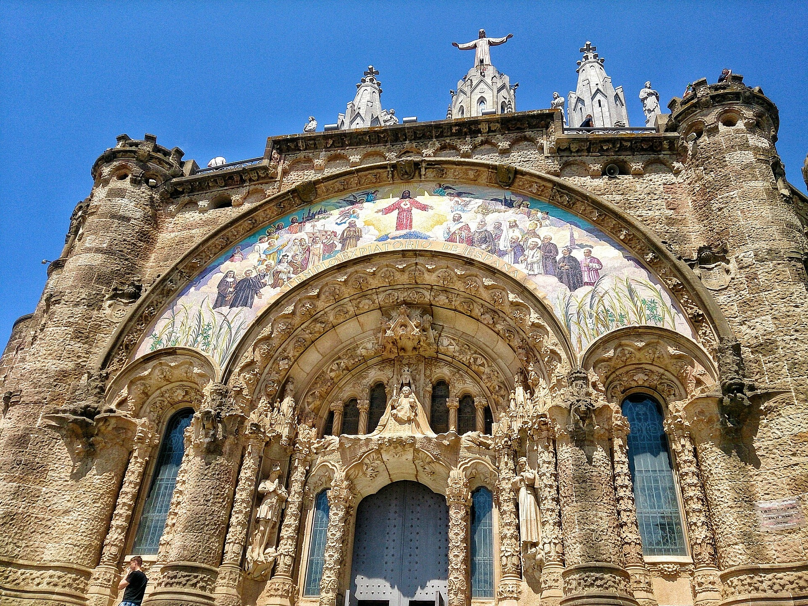
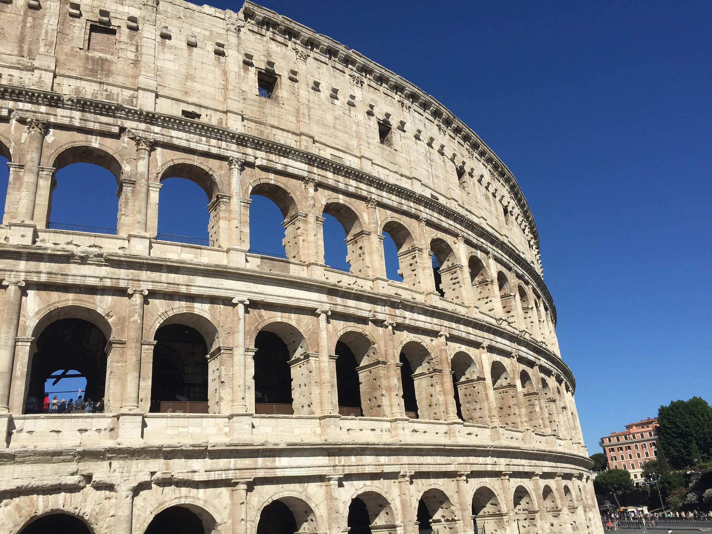

- 

- 


We did most of the heavy lifting for you to provide a default stylings that incorporate our custom components. Additionally, we refined animations and transitions to provide a smoother experience for developers.
By utilizing elements and principles of Material Design, we were able to create a framework that incorporates components and animations that provide more feedback to users. Additionally, a single underlying responsive system across all platforms allow for a more unified user experience.
We have provided detailed documentation as well as specific code examples to help new users get started. We are also always open to feedback and can answer any questions a user may have about Materialize.